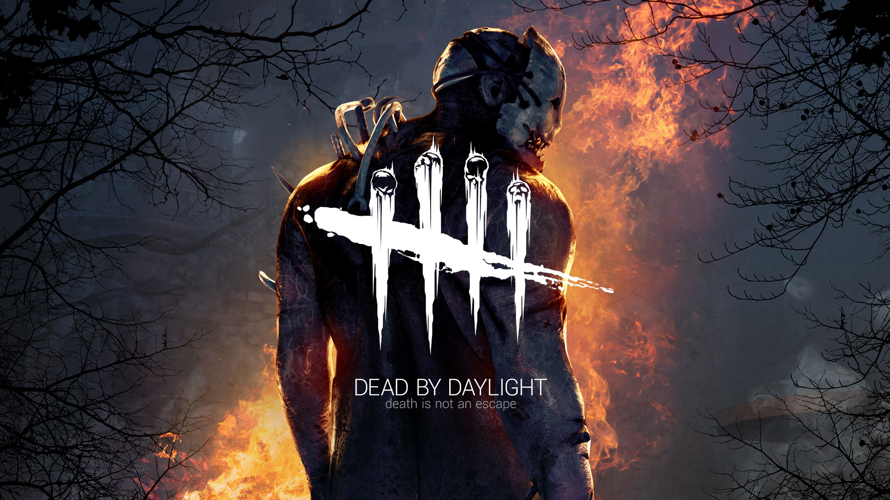

Avis
“Dead by Daylight est devenu un jeu multijoueur compétitif asymétrique inégalé et l'un des meilleurs jeux d'horreur du moment.”
9/10 – Gamespot
“Le concept inventif de Dead by Daylight pour un jeu d'horreur compétitif établit un équilibre incroyable entre deux styles de jeu très différents et rend les deux convaincants.”
9/10 – IGN
“Cinq ans plus tard, Dead by Daylight propose le multijoueur chat et souris le plus intéressant auquel vous puissiez jouer.”
88/100 – PC Gamer